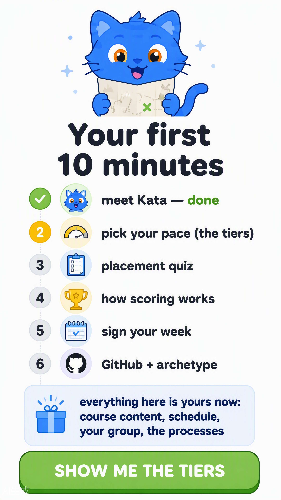
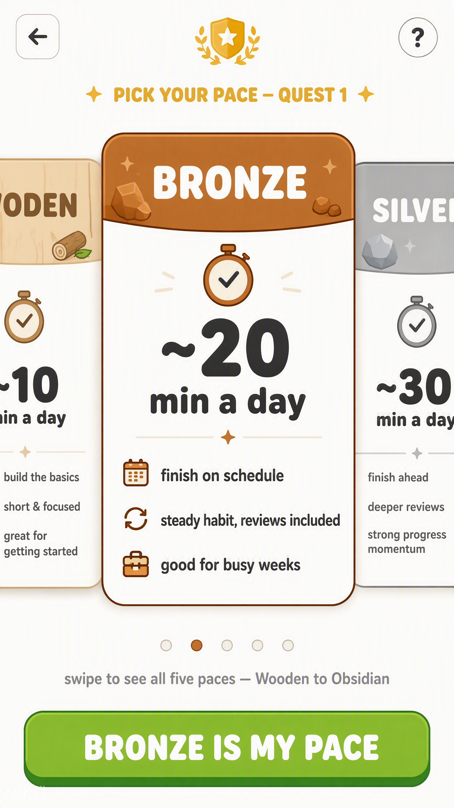
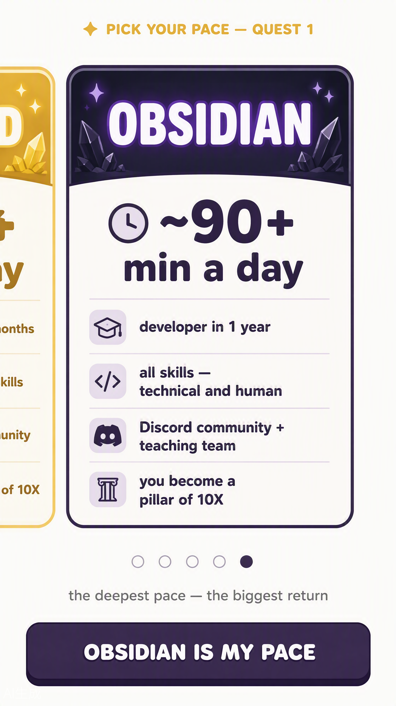
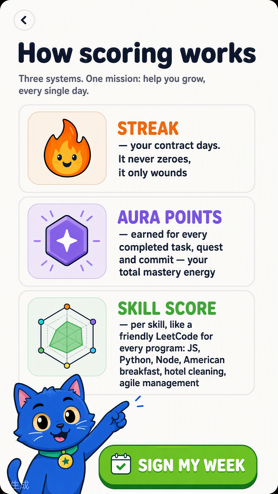

FLOW 9
Meet Kata — her job, printed
RB-00Before any form, Kata says what she actually does: nudges until daily/weekly quests are done, class & session reminders, official 10X administration updates, exam & unfinished-quiz warnings — and the help button lives in every flow. Guidance is structural, not decorative.

FLOW 10
Your first 10 minutes — the onboarding roadmap
RB-01The whole setup as six visible steps with course access granted up front: content, schedule, your group, the processes. No mystery about what happens next.

FLOW 11
Pick your pace — the tiers (FIRST QUEST)
RB-02 · tiersInstagram-style card carousel, Wooden → Obsidian: ~10 min idle pace → ~90+ min "developer in 1 year, all skills, Discord + teaching team". Outcomes are printed per tier so the student decides their investment with eyes open. Admin will configure tier options later.


FLOW 12
Choice summary + welcome rewards
RB-03The choice summarized with the honest rules: changeable anytime, scoring follows investment + completed tasks, switching never costs the streak. Cheering rewards land: +2 streak freezes, +50 aura points.

FLOW 13
Placement quiz
RB-04Calibrates the starting floor. Admin-configurable: questions, steps, and the small onboarding roadmap are all editable — the flow is data, not code. (Floor-1 skip removed per owner.)

FLOW 14
How scoring works — every program
RB-05 · scoringStreak (contract days, wounds never zeroes), Aura points (every task/quest/commit), Skill score (a friendly LeetCode per skill — for every program: JS, Python, Node, American breakfast, hotel cleaning, agile management, and any short course).

FLOW 15
Week contract
RB-06The streak's engine room: pick your days, sign it. Changeable anytime, never a guilt contract.

FLOW 16
GitHub connect — conditional
RP-01Programming courses only. Skipped entirely for culinary, hospitality, management and short courses. Skip is prominent and final: "optional forever".

FLOW 17
Archetype + Kata's feedback
RB-12 · RB-13The 6-question in-app quiz, then Kata answers personally: "You're a BUILDER — floors with real projects first, theory right when you need it." Archetype shapes the coach; retake anytime.